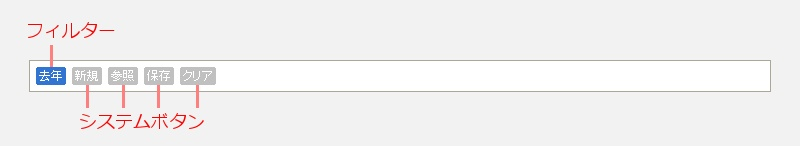
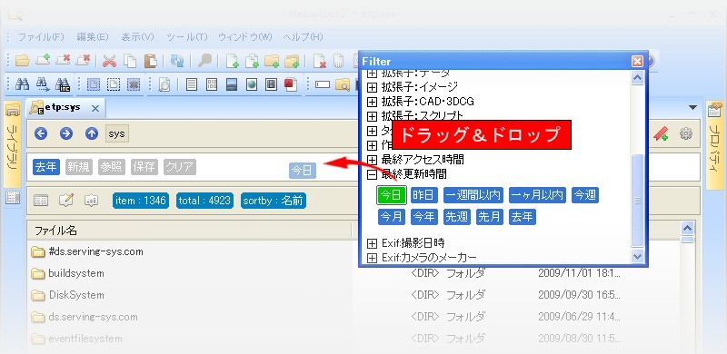

Mebiusbox 2.x ユーザーガイド
フィルター
Mebiusbox2 では、フォルダのアイテムに対して、柔軟なフィルター処理をかけることが出来ます。
フィルターは検索クエリで記述しますが、検索クエリの記述の仕方がよくわからない、難しい、面倒と思う方が多いでしょう。
そこで、あらかじめ検索クエリを記述しておいたフィルターを多数用意しておきました。
ユーザーはその中から適用したいフィルターを探し出し、ドラッグ＆ドロップするだけで設定することが出来ます。
フィルターバー
フィルターはワークスペースにあるフィルターバーで設定します。

新規
新規にフィルターを作成します。この場合、検索クエリを記述する必要があります。
参照
あらかじめ用意されているフィルター、および、ユーザーが独自に作成したフィルターのリストを表示します。
保存
現在設定されているフィルターを、新しいフィルターとして保存します。
クリア
現在設定されているフィルターをすべてクリアします。
フィルター選択画面
フィルターの選択画面を表示するには、フィルターバーの「参照」ボタンを押します。
フィルター選択画面は次のような画面です。

適用したいフィルターを見つけたら、それをフィルターバー上にドラッグ＆ドロップします。

複数のフィルターを設定している場合は「AND」処理されます。
フィルターを除去したい場合は「クリア」ボタンを押してください。 また、個々に除去したい場合は、除去したいフィルターをフィルターバーの領域外へドラッグ＆ドロップしてください。
フィルター設定の仕方（動画）